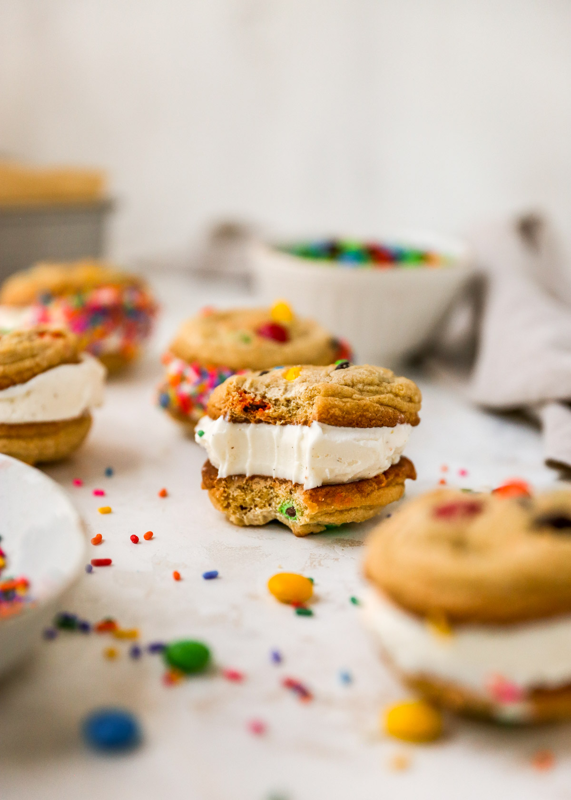

Ice Cream Cookie Sandwich

Description
This is an incredible summer snack/treat for the whole family! Credit for
this recipe goes to
@kimscravings.
Ingredients
For the ice cream cookie sandwiches
- 2 pints (about 4 cups) ice cream (use any favorite brand and
flavor)
- 32 M&M cookies (recipe below)
- Optional for rolling the sides of the cookie sandwiches: mini M&Ms,
crushed M&Ms, mini chocolate chips, sprinkles
For the M&M cookies
- 3 1/4 cup (390g) all-purpose flour
- 1 1/4 teaspoons baking powder
- 1 teaspoon baking soda
- 1 teaspoon salt
- 1 cup, 2 sticks, (226g) unsalted butter, softened to room
temperature
- 1 1/2 cups (288g) light or dark brown sugar
- 1/2 cup (100g) granulated sugar
- 2 large eggs, room temperature
- 2 teaspoons pure vanilla extract
- 2 cups M&Ms, plus more for tops if desired
Directions
M&M cookies
- Preheat oven to 365℃F or 185℃C. Line 2 large baking sheets
with parchment paper or silicone baking mats. Set aside.
- Whisk together dry ingredients: flour, baking powder, baking soda, and
salt. Set aside.
- Add softened butter and sugars to a large mixing bowl and use an
electric mixer to beat together on medium speed until combined and
creamy, about 2 minutes. Add eggs one at a time, mixing after each
addition until just combined. With the last egg, add in vanilla
extract.
- On low speed, gradually add the dry ingredients to the butter/sugar
mixture. Fold in the M&M’s. I have had success baking this dough without
chilling it, but chilling the dough for at least 30 minutes will yield
the best cookie.
- Drop balls of cookie dough onto the lined cookie sheet. I use about 2
tablespoons of dough for each cookie.
- Bake for 10-12 mins. Remove from the oven right when edges start
getting golden.
- If desired, while the cookies are still warm, press a few extra M&M’s
into the tops of each cookie. Cool for 5 minutes on the baking sheet.
Transfer cookies to a cooling rack to cool completely. Cookies stay
fresh covered at room temperature for up to 1 week. Before making the
ice cream cookie sandwiches, transfer to the freezer for
20-30 minutes.
Ice cream cookie sandwich assembly
- Take one cookie and place a scoop of ice cream (about 1/3 to 1/4 cup)
on the flat side of the cookie. Top with flat side of second cookie to
make a sandwich.
- Optional: Place mini or crushed M&Ms, sprinkles or mini chocolate chips
in a bowl or on plate. Roll sides of the sandwich in the chips or
sprinkles. You can serve immediately or wrap tightly in plastic wrap and
freeze.
Notes
Transferring the baked cookies to the freezer is very important.
If you try to make the sandwiches without freezing the cookies first, the
cookies will break when you press the ice cream between them.
Storing ice cream cookie sandwiches: Once assembled, let
them harden in the freezer for an hour. Then, individually wrap them in
plastic wrap or place in reusable storage bags. They will keep in the
freezer for about 2-3 months.